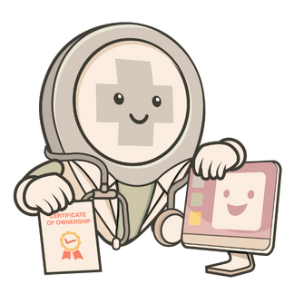

You wrote the record. It should stay with you.
Clinicians should be able to keep and move the records they write. Patients should be able to take their history to the next clinic. Neither should have to pay to get those records back.
Picture a family doctor finishing a day at her clinic. Eight years of notes are in her software: allergies, adjusted doses, things to check at the next visit. Those notes are how she remembers people.
A renewal notice arrives. She considers another system and asks how to take her records with her. Will the export include the attachments? Can she read the history after her subscription ends? Which parts can the next system use?
Tomorrow, a patient she has seen for years will sit down across from her. She needs those notes to remain useful through whatever comes next.
We believe changing tools should not make that history less useful. Patients should be able to obtain and share their information. Providers should be able to maintain and move the records they are responsible for.
Local First Health is an early-stage initiative. Our mission is to help more local-first health apps get built around that belief. No clinical product is available through LFH.
Where the record lives
Local-first software keeps a usable copy of data on your device and supports work without a constant internet connection. Sharing between systems requires additional design and testing.
Three approaches that coexist today. These diagrams show typical arrangements; individual systems vary.
Pre-cloud era
A usable record lives on the clinic's machine.
Sharing with another device or clinic needs a separate process.
Cloud era
The working record depends on a remote service.
This example needs a connection. Some hosted systems also offer local or offline features.
Local-first era
A usable copy stays on the clinic's device.
Essential work should continue offline, with documented limits. Sharing and synchronization need separate design and testing.
What we want health apps to make possible
These are the qualities we want health apps to have. They are goals for software, not features LFH delivers today.
They draw on the seven local-first ideals from Ink & Switch and the responsibilities that come with health records. These twelve goals are LFH’s interpretation, independent of Ink & Switch.
Work offline
Essential recordkeeping should stay available when the internet goes down.
Keep your records
Patients and providers should be able to keep and move the records they need.

Keep using the software
Clinics should be able to keep using their software as their needs and providers change.
Standards you can check
Health apps should make their standards and evaluation results clear.
Privacy by design
People should know what leaves their device and who can access it.
Protect the record
Protection for devices, backups and shared records should be built in and explained.
Ready when needed
The record should be ready when a patient sits down.
Work together
Clinicians and patients should be able to share records with their source and date intact.
Copies that stay in step
Changes should travel between devices, with a clear way to resolve conflicting edits.
Usable local copies
A useful copy of the record should stay on the clinic’s own devices.
Open foundations
Open code and clear documentation should give others a foundation to build on.
Freedom to move
People should be able to retrieve their existing records without a fee and choose their next tool.
A person's history should outlast any app or company. The five proposed principles turn these beliefs into questions you can ask a software provider. Builders can also explore the wider local-first community.
What ownership means
Health data belongs to people, not platforms. A patient and the providers responsible for a record should be able to keep useful copies and decide how to share them.
Some systems already offer bulk exports. What comes out, what another tool can use, and what access remains after cancellation vary. Here are four questions worth asking:
- Can we keep a readable copy after our subscription ends?
- What is included in the export, and what is left out?
- Which parts can the next tool use, and what needs conversion or checking?
- Which essential tasks work without an internet connection, and with what limits?
Paying for software or support should never be a condition of retrieving existing records.
Moving records into another system may need additional work. That work is different from getting your existing records back.
Where LFH stands
LFH grew out of experience working in teams building health record systems since 2016. Read the background.
This is an early-stage initiative that develops as time allows. No clinical product or foundation codebase is available through LFH. See the current stage.
Local-first reduces dependence on central services. It does not make privacy or security automatic. Each implementation must explain how it protects devices, backups and shared records. These principles are not a HIPAA compliance assessment.
Further reading
LFH is part of a wider conversation about software people can keep and use. These sources discuss the ideas; neither is an endorsement of LFH.
“Local-first software: You own your data, in spite of the cloud”
The essay that named the seven ideals.
“The Cloud Is a Prison. Can the Local-First Software Movement Set Us Free?”
The local-first movement, outside health. It does not cover LFH.
If you believe this too
Picture the choice we want that doctor to have. Before renewing, she has checked what she can keep reading, what the next system can use, and what needs more work. Retrieving her existing records carries no fee.
She decides to stay. Staying is now a choice.
If these ideas matter to your work, share a workflow problem, question or perspective. We have limited capacity and may be slow to respond.